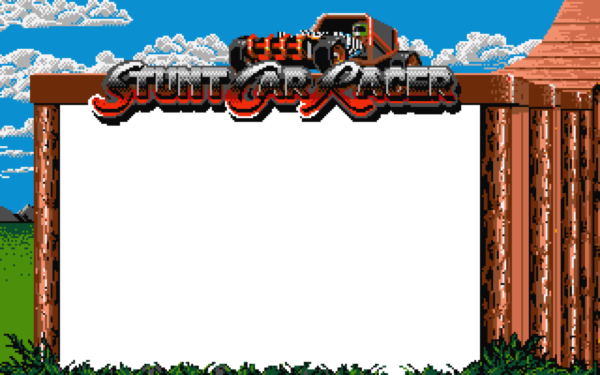

The Amiga classic
Elevated tracks. Flat shades. That jump.
Geoff Crammond’s stunt racer — remade for modern machines, still speaking SCR.
Inside the build
Same dusty world. More life on the rails.
Enhanced Look stays inside the original palette — flat shades, no photoreal. Toggle it off anytime.
-
Amiga+
Vesuri-tuned springs and damping for that airtime feel.
-
Enhanced
Horizon rings, rails, floodlights, clouds, cube field — all SCR colours.
-
Two-player
Coming back soon — local and remote multiplayer are temporarily offline.
-
Packs
Classic · TNT · Original · Loops from the track menu.
No install
Play in the browser now.
Free WebAssembly build. Keyboard or gamepad recommended.
Apple Silicon
Download for Mac.
Native Apple Silicon build. Unsigned — macOS will warn once on first launch.
- Download the Apple Silicon DMG.
- Open it and drag the app into Applications.
- Run Fix macOS Gatekeeper.command in the DMG, or use System Settings → Privacy & Security → Open Anyway.
- Race. Hit O for Enhanced Look.
FAQ
Common questions
What is Stunt Car Racer for Lovers?
A free modern remake of Geoff Crammond’s Amiga classic Stunt Car Racer, with Amiga+ physics, Speed Feel, and Enhanced Look scenery that stays in the original SCR palette.
Can I play Stunt Car Racer online for free?
Yes — open the browser build. No account or install required.
How do I install it on Mac?
Get the Apple Silicon DMG and drag the app to Applications. macOS will warn that Apple could not verify the developer. Click Done, then run Fix macOS Gatekeeper.command from the DMG, or open System Settings → Privacy & Security → Open Anyway.
macOS says the app was not opened?
Expected for this free unsigned release. Do not move it to Trash. Use Fix macOS Gatekeeper.command, or Privacy & Security → Open Anyway. Terminal: xattr -cr "/Applications/Stunt Car Racer for Lovers.app" then open the app.
Is this the original Amiga game?
No — it is a remake based on StuntCarRemake, preserving the flat-shaded Crammond feel for modern machines.
What do U, I, and O do?
U Amiga+ physics · I Speed Feel · O Enhanced Look · P Pause.